# Import all required libraries
# Data handling and manipulation
import numpy as np
import pandas as pd
# Visualization libraries
import matplotlib.pyplot as plt
import seaborn as sns
# Machine learning and preprocessing
from sklearn.linear_model import LinearRegression
from sklearn.preprocessing import PolynomialFeatures
from sklearn.model_selection import train_test_split, cross_val_score
from sklearn.metrics import mean_squared_error, r2_score
from sklearn.pipeline import make_pipeline
from sklearn.gaussian_process.kernels import ExpSineSquared
from sklearn.kernel_approximation import RBFSampler
# Model selection
from sklearn.model_selection import GridSearchCV, RandomizedSearchCV
from sklearn.metrics import make_scorer
# Statistical models
import statsmodels.api as sm
from statsmodels.nonparametric.smoothers_lowess import lowess
import operator
# Scientific computing
from scipy.interpolate import UnivariateSpline, interp1d, CubicSpline, make_interp_spline
# Design matrices
from patsy import dmatrix
# Generalized Additive Models
from pygam import LinearGAM, s, f
# Set the default style for visualization
sns.set_theme(style = "white", palette = "colorblind")
# Increase font size of all Seaborn plot elements
sns.set(font_scale = 1.25)Regressions III
Data Mining and Discovery
Setup
Our data: Tucson daily average temps
import janitor
tucsonTemp = pd.read_csv("data/tucsonWeather.csv", encoding = 'iso-8859-1')[["STATION", "NAME", "DATE", "TAVG"]]
tucsonTemp = janitor.clean_names(tucsonTemp)
tucsonTemp['date'] = pd.to_datetime(tucsonTemp['date'])
tucsonTemp['date_numeric'] = (tucsonTemp['date'] - tucsonTemp['date'].min()).dt.days
tucsonTemp.head()| station | name | date | tavg | date_numeric | |
|---|---|---|---|---|---|
| 0 | US1AZPM0322 | CATALINA 1.6 S, AZ US | 2023-01-01 | NaN | 0 |
| 1 | US1AZPM0322 | CATALINA 1.6 S, AZ US | 2023-01-02 | NaN | 1 |
| 2 | US1AZPM0322 | CATALINA 1.6 S, AZ US | 2023-01-03 | NaN | 2 |
| 3 | US1AZPM0322 | CATALINA 1.6 S, AZ US | 2023-01-04 | NaN | 3 |
| 4 | US1AZPM0322 | CATALINA 1.6 S, AZ US | 2023-01-05 | NaN | 4 |
| variable | class | description |
|---|---|---|
station |
character | Station ID |
name |
character | Station name |
date |
date | Date the reading was collected |
tavg |
float | Daily average temperature |
date_numeric |
int | Numerical representation of the date |
<class 'pandas.core.frame.DataFrame'>
RangeIndex: 47731 entries, 0 to 47730
Data columns (total 5 columns):
# Column Non-Null Count Dtype
--- ------ -------------- -----
0 station 47731 non-null object
1 name 47731 non-null object
2 date 47731 non-null datetime64[ns]
3 tavg 718 non-null float64
4 date_numeric 47731 non-null int64
dtypes: datetime64[ns](1), float64(1), int64(1), object(2)
memory usage: 1.8+ MB<class 'pandas.core.frame.DataFrame'>
Index: 718 entries, 6831 to 45728
Data columns (total 5 columns):
# Column Non-Null Count Dtype
--- ------ -------------- -----
0 station 718 non-null object
1 name 718 non-null object
2 date 718 non-null datetime64[ns]
3 tavg 718 non-null float64
4 date_numeric 718 non-null int64
dtypes: datetime64[ns](1), float64(1), int64(1), object(2)
memory usage: 33.7+ KB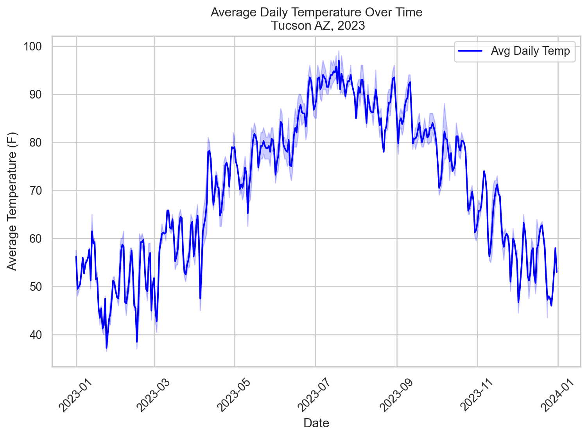
Review: linear models
\(Y_i = \beta_0 + \beta_1 X_i + \epsilon_i\)
\(Y_i\): Dependent/response variable
\(X_i\): Independent/predictor variable
\(\beta_0\): y-intercept
\(\beta_1\): Slope
\(\epsilon_i\): Random error term, deviation of the real value from predicted
Advantage: Simplicity, interpretability, ease of fitting.
Limitations of linear models
Linearity Assumption: Assumes a linear relationship between predictors and response.
Lacks Flexibility: Struggles with non-linear relationships and interactions without explicit feature engineering.
Potential for Underfitting: May not capture complex data patterns, leading to poor model performance.
Motivation for moving beyond linearity
Improved Accuracy: Captures non-linear relationships for better predictions.
Complex Data Handling: Models complex patterns in real-world data.
Interpretability with Non-linearity: Offers structured ways to understand non-linear effects of predictors.
Balanced Flexibility: Provides a middle ground between simplicity and the complexity of machine learning models.
Polynomial regression
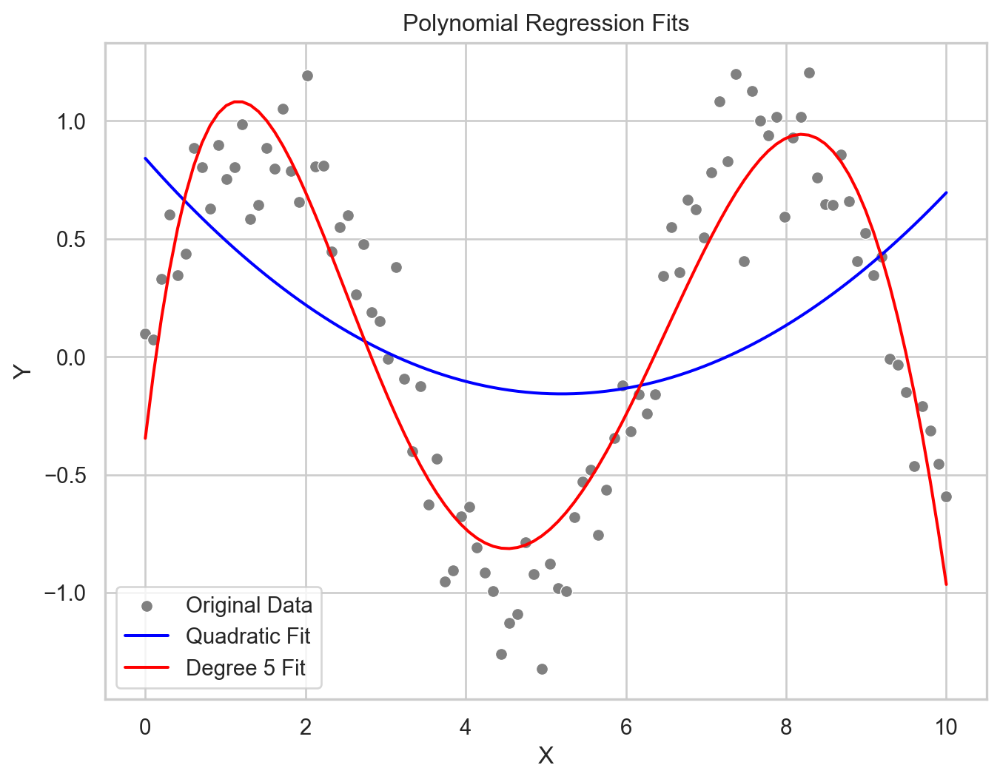
\(Y = \beta_0 + \beta_1X + \beta_2X^2 + \dots + \beta_nX^n + \epsilon\)
Where:
\(Y\): Dependent/response variable
\(X\): Independent/predictor variable
\(X^n\): the \(n\)th degree polynomial term of \(X\).
\(\beta_0, \beta_1, \beta_2, ... \beta_n\): the coefficients that the model will estimate
\(\epsilon_i\): Random error term, deviation of the real value from predicted
Non-linear Relationship Modeling: Incorporates polynomial terms of predictors, enabling the modeling of complex, non-linear relationships between variables.
Flexibility: The degree of the polynomial (\(n\)) determines the model’s flexibility, with higher degrees allowing for more complex curves.
Overfitting Risk: Higher-degree polynomials can lead to overfitting, capturing noise rather than the underlying data pattern.
Interpretation: While polynomial regression can model non-linear relationships, interpreting the coefficients becomes more challenging as the degree of the polynomial increases.
Use Cases: Suitable for modeling phenomena where the relationship between predictors and response variable is known to be non-linear, such as in biological, agricultural, or environmental data.
Polynomial regression: applied
Code
X = tucsonTemp[['date_numeric']].values
y = tucsonTemp['tavg'].values
X_train, X_test, y_train, y_test = train_test_split(X, y, test_size = 0.2, random_state = 42)
# Transforming data for polynomial regression
poly_features = PolynomialFeatures(degree = 2) # Adjust degree as necessary
X_train_poly = poly_features.fit_transform(X_train)
X_test_poly = poly_features.transform(X_test)
# Initialize the Linear Regression model
linear_reg = LinearRegression()
# Fit the model with polynomial features
linear_reg.fit(X_train_poly, y_train)
# Predict on the testing set
y_pred = linear_reg.predict(X_test_poly)
# Calculate and print the MSE and R-squared
mse_initial = mean_squared_error(y_test, y_pred)
r2_initial = r2_score(y_test, y_pred)
print(f'Mean Squared Error: {mse_initial}')
print(f'R-squared: {r2_initial}')Mean Squared Error: 55.59733350802896
R-squared: 0.7613929340063216Code
# Scatter plot of the actual data points
plt.scatter(X_test, y_test, color = 'lightgray', label = 'Actual data')
# To plot the polynomial curve, we need to sort the values because the line plot needs to follow the order of X
# Create a sequence of values from the minimum to the maximum X values for plotting the curve
X_plot = np.linspace(np.min(X), np.max(X), 100).reshape(-1, 1)
# Transform the plot data for the polynomial model
X_plot_poly = poly_features.transform(X_plot)
# Predict y values for the plot data
y_plot = linear_reg.predict(X_plot_poly)
# Plot the polynomial curve
plt.plot(X_plot, y_plot, color = 'red', label = 'Polynomial fit')
# Labeling the plot
plt.xlabel('Date Numeric')
plt.ylabel('Daily Average Temperature')
plt.title('2nd Degree Polynomial Fit to Tucson Temperature Data')
plt.legend()
# Show the plot
plt.show()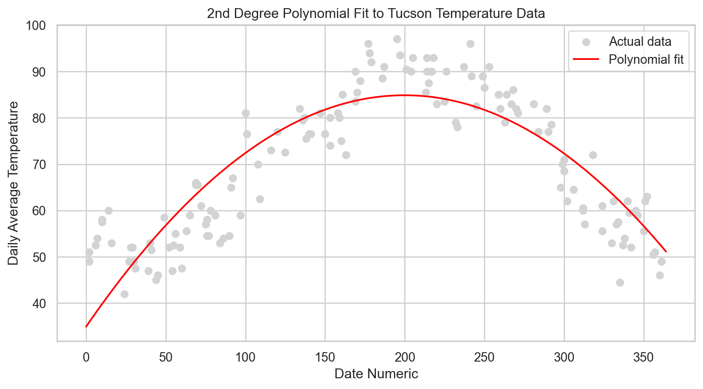
Model tuning: Polynomial regression
# Exploring different polynomial degrees to find the best fit
degrees = [1, 2, 3, 4, 5]
mse_scores = []
r2_scores = []
for degree in degrees:
poly_features = PolynomialFeatures(degree = degree)
X_train_poly = poly_features.fit_transform(X_train)
X_test_poly = poly_features.transform(X_test)
model = LinearRegression()
model.fit(X_train_poly, y_train)
y_pred = model.predict(X_test_poly)
mse_scores.append(mean_squared_error(y_test, y_pred))
r2_scores.append(r2_score(y_test, y_pred))
# Display the MSE and R-squared for each degree
for degree, mse, r2 in zip(degrees, mse_scores, r2_scores):
print(f'Degree: {degree}, MSE: {mse}, R-squared: {r2}')Degree: 1, MSE: 222.6527514813582, R-squared: 0.04444122740680767
Degree: 2, MSE: 55.59733350802896, R-squared: 0.7613929340063216
Degree: 3, MSE: 38.10593683628896, R-squared: 0.83646075788627
Degree: 4, MSE: 26.38560491598588, R-squared: 0.8867609042336072
Degree: 5, MSE: 26.066518240099665, R-squared: 0.8881303284618374# Selecting the best degree based on previous step
best_degree = degrees[np.argmin(mse_scores)]
# Transforming data with the best degree
poly_features_best = PolynomialFeatures(degree = best_degree)
X_train_poly_best = poly_features_best.fit_transform(X_train)
X_test_poly_best = poly_features_best.transform(X_test)
# Fitting the model again
best_model = LinearRegression()
best_model.fit(X_train_poly_best, y_train)
# New predictions
y_pred_best = best_model.predict(X_test_poly_best)
# Calculate new MSE and R-squared
mse_best = mean_squared_error(y_test, y_pred_best)
r2_best = r2_score(y_test, y_pred_best)
print(f'Best Degree: {best_degree}, MSE: {mse_best}, R-squared: {r2_best}')Best Degree: 5, MSE: 26.066518240099665, R-squared: 0.8881303284618374Code
# Generate a sequence of X values for plotting
X_range = np.linspace(X.min(), X.max(), 500).reshape(-1, 1)
# Plot the actual data
plt.scatter(X_test, y_test, color = 'gray', alpha = 0.5, label = 'Actual data')
colors = ['blue', 'green', 'red', 'purple', 'orange']
labels = ['1st degree', '2nd degree', '3rd degree', '4th degree', '5th degree']
for i, degree in enumerate(degrees):
# Create polynomial features for the current degree
poly_features = PolynomialFeatures(degree=degree)
X_train_poly = poly_features.fit_transform(X_train)
X_test_poly = poly_features.transform(X_test)
X_range_poly = poly_features.transform(X_range)
# Fit the Linear Regression model
model = LinearRegression()
model.fit(X_train_poly, y_train)
# Predict over the generated range of X values
y_range_pred = model.predict(X_range_poly)
# Plot
plt.plot(X_range, y_range_pred, color = colors[i], label = f'Polynomial fit degree {degree}')
# Enhancing the plot
plt.xlabel('Date Numeric')
plt.ylabel('Daily Average Temperature')
plt.title('Comparing Polynomial Fits of Different Degrees')
plt.legend()
plt.show()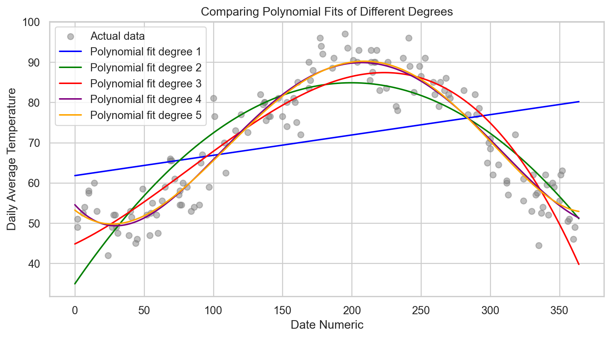
Step functions
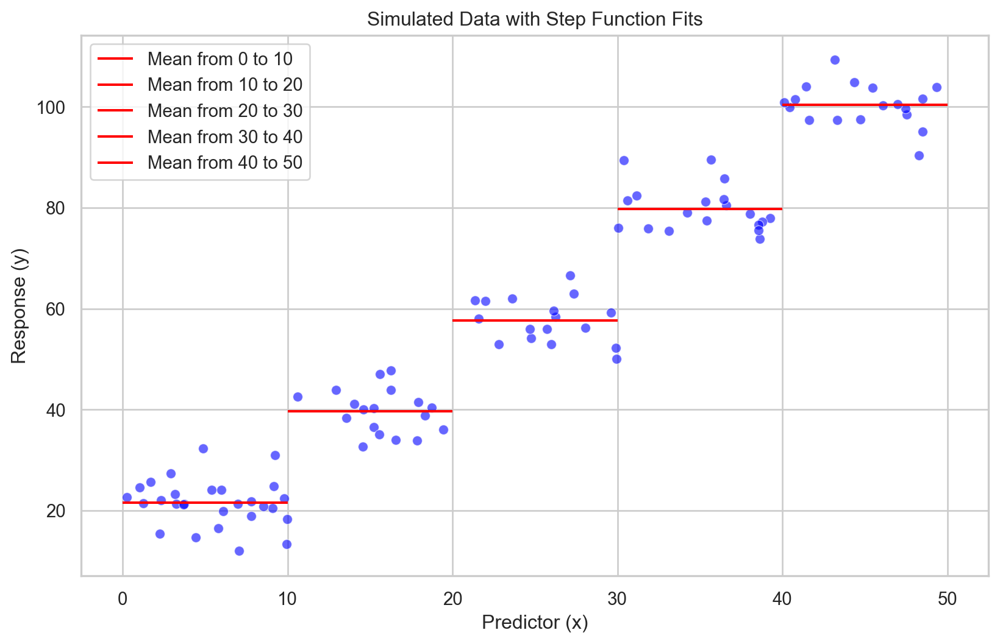
\(f(x) = \beta_0 + \beta_1 I(x \in C_1) + \beta_2 I(x \in C_2) + \dots + \beta_k I(x \in C_k)\)
Where
\(I\): indicator function that returns 1 if \(x\) is within the interval \(C_i\) and 0
\(\beta_0, \beta_1, \beta_2, … \beta_k\): value of the response variable \(Y\) within interval \(C_i\)
Model Non-linearity: Efficiently captures non-linear relationships by assigning constant values within specific intervals of the predictor variable.
Simple Interpretation: Each step’s effect is straightforward, with a constant response value within each interval.
Adjustable Steps: Flexibility in setting the number and boundaries of steps, although optimal placement may require exploratory data analysis or domain knowledge.
Discontinuity Handling: Can model sudden jumps in the response variable, a feature not readily handled by smooth models like polynomials or splines.
Step functions: applied
Code
# Define the step function intervals
step_intervals = [0, 100, 200, 300, 400]
tucsonTemp['step_bins'] = pd.cut(tucsonTemp['date_numeric'], bins = step_intervals, labels=False)
# Prepare the data for step function fitting
X = pd.get_dummies(tucsonTemp['step_bins'], drop_first = True).values
y = tucsonTemp['tavg'].values
X_train, X_test, y_train, y_test = train_test_split(X, y, test_size = 0.2, random_state = 42)
# Fit the step function model
model = LinearRegression()
model.fit(X_train, y_train)
y_pred = model.predict(X_test)
# Calculate and print the MSE and R-squared
mse = mean_squared_error(y_test, y_pred)
r2 = r2_score(y_test, y_pred)
print(f'Mean Squared Error: {mse:.2f}')
print(f'R-squared: {r2:.2f}')Mean Squared Error: 53.23
R-squared: 0.77Code
# Plotting the step function fit
sns.lineplot(x = tucsonTemp['date_numeric'], y = tucsonTemp['tavg'], label = 'Actual Data', alpha = 0.6)
# Generate the step function values for the plot
for i, (lower, upper) in enumerate(zip(step_intervals[:-1], step_intervals[1:])):
mask = (tucsonTemp['date_numeric'] >= lower) & (tucsonTemp['date_numeric'] < upper)
plt.hlines(y[mask].mean(), lower, upper, colors = 'red', label = f'Step {i+1}')
plt.xlabel('Date Numeric')
plt.ylabel('Daily Average Temperature')
plt.title('Step Function Fit to Tucson Temperature Data')
plt.legend()
plt.show()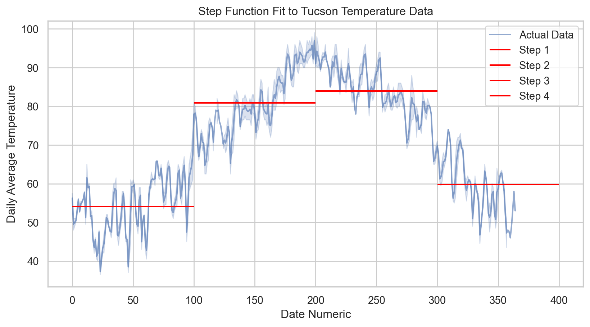
Basis functions
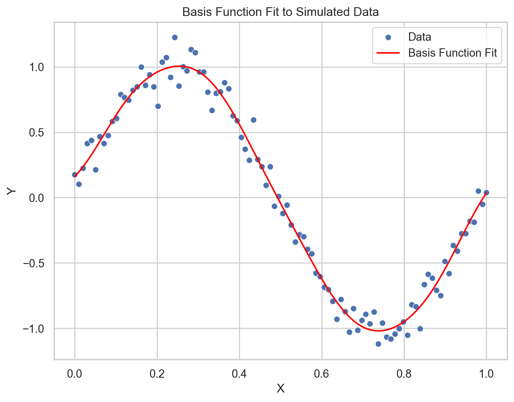
\(y(x) = \sum_{j=0}^{M} w_j \phi_j(x)\)
Where:
\(y(x)\): the predicted value
\(\phi_j(x)\): the \(j\)th basis function
\(w_j\): weight (or coefficient) for the \(j\)th basis function
\(M\): number of basis functions used in the model
For Gaussian basis functions, each \(\phi_j(x)\) could be defined as:
\(\phi_j(x) = \exp\left(-\frac{(x - \mu_j)^2}{2s^2}\right)\)
Where:
\(\mu_j\) is the center of the \(j\)th basis function
\(s\) is the width
Flexibility: Basis functions, such as polynomials, splines, or Gaussians, allow modeling of complex non-linear relationships.
Transformations: They transform the input data into a new space where linear regression techniques can be applied.
Customizability: The choice and parameters of the basis functions can be adapted to the problem, often requiring domain knowledge or model selection techniques.
Overfitting Potential: More basis functions can lead to greater model complexity, which increases the risk of overfitting, hence the need for regularization.
Computational Efficiency: While basis functions can provide powerful models, they may introduce computational complexity, especially when the number of basis functions is large.
Basis function regression: Applied
Code
# Splitting the dataset
X = tucsonTemp[['date_numeric']].values
y = tucsonTemp['tavg'].values
X_train, X_test, y_train, y_test = train_test_split(X, y, test_size = 0.2, random_state = 42)
# Create the basis function model
model = make_pipeline(RBFSampler(gamma = 1.0, n_components=50, random_state=42), LinearRegression())
# Fit the model
model.fit(X_train, y_train)
# Predict on the testing set
y_pred = model.predict(X_test)
# Calculate and print the MSE and R-squared
mse = mean_squared_error(y_test, y_pred)
r2 = r2_score(y_test, y_pred)
print(f'Mean Squared Error: {mse:.2f}')
print(f'R-squared: {r2:.2f}')Mean Squared Error: 93.76
R-squared: 0.60Code
# Predict on a grid for a smooth line
np.random.seed(42)
num_samples = 365
x_grid = np.linspace(X.min(), X.max(), num_samples).reshape(-1, 1)
y_grid_pred = model.predict(x_grid)
# Plotting the actual data points and the basis function fit
sns.lineplot(x = X_train.squeeze(), y = y_train, color = 'gray', label = 'Training data', alpha = 0.5)
sns.lineplot(x = X_test.squeeze(), y = y_test, color = 'blue', label = 'Testing data', alpha = 0.5)
sns.lineplot(x = x_grid.squeeze(), y = y_grid_pred, color = 'red', label = 'Basis Function Fit')
# Labeling the plot
plt.xlabel('Normalized Date Numeric')
plt.ylabel('Daily Average Temperature')
plt.title('Basis Function Fit to Tucson Temperature Data')
plt.legend()
plt.show()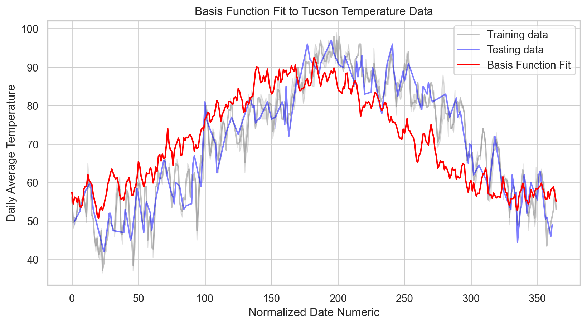
Aside: Grid search cross-validation
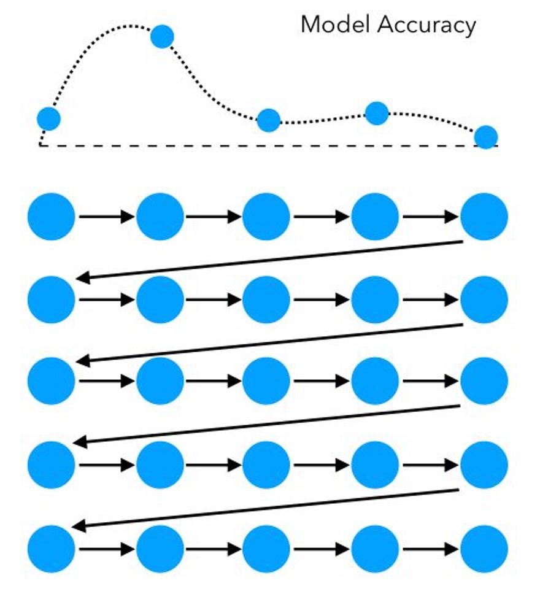
\(CV_{\text{score}} = \frac{1}{k} \sum_{i=1}^{k} \text{score}_i\)
Where:
\(k\) is the number of folds in the cross-validation.
\(score_i\) is the score obtained from the \(i\)-th fold.
\(CV_{score}\) is the cross-validation score, which is the average of all the individual fold scores.
Pros
Systematic Exploration: It ensures that every combination in the specified parameter range is evaluated.
Reproducibility: The search is deterministic, meaning it will produce the same result each time for the same dataset and parameters.
Cons
Computational Cost: It can be very computationally expensive, especially with a large number of hyperparameters or when the range of values for each hyperparameter is large.
Dimensionality: The time required increases exponentially with the addition of more parameters (known as the curse of dimensionality).
Here, we identify an area where the model performs well, then launch a second grid:
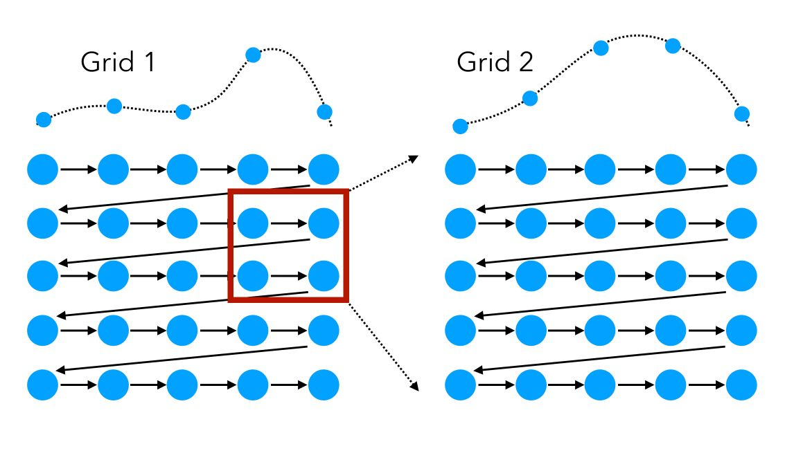
Aside: random search
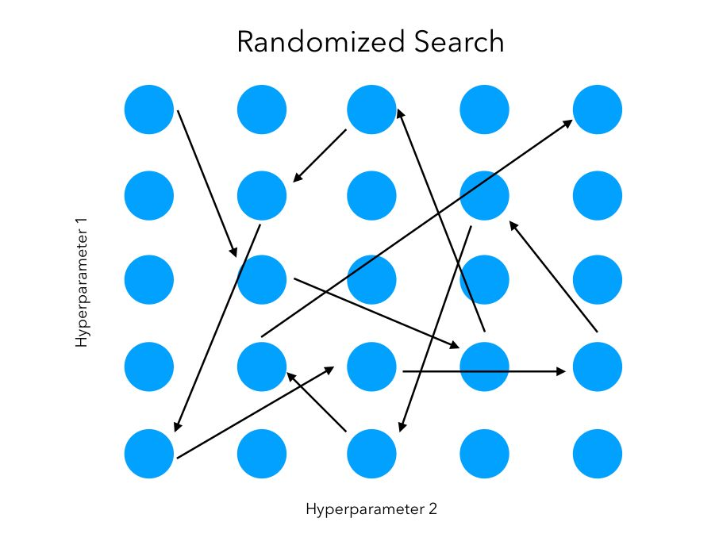
\(\text{Given:} \quad \text{Hyperparameters Space} = \{ H_1, H_2, …, H_n \}\)
\(\text{Randomly sample } p \text{ sets of hyperparameters: } \{ h_{1_p}, h_{2_p}, …, h_{n_p} \}\)
\(\text{For each set of hyperparameters, compute:} \quad CV_{\text{score}_p} = \frac{1}{k} \sum_{i=1}^{k} \text{score}_{i_p}\)
\(\text{Select the set with the best } CV_{\text{score}}.\)
\(H_1, H_2, … H_n\) represent the range of hyperparameters being considered.
\(p\) is the number of parameter sets sampled in the random search.
\(h_{1_p}, h_{2_p}, ... h_{n_p}\) is one of the randomly sampled sets of hyperparameters.
\(k\) is the number of folds in cross-validation.
\(score_{1_p}\) is the evaluation score of the \(i\)-th fold using the \(p\)-th set of hyperparameters.
\(CV_{score_p}\) is the cross-validation score for the \(p\)-th set of hyperparameters.
Pros:
Computational Efficiency: Less resource-intensive than exhaustive grid search.
Exploratory: Can discover good hyperparameters without testing every possible combination.
Diverse Sampling: May explore unexpected areas of the hyperparameter space.
Cons:
Potentially Incomplete: Might miss the optimal hyperparameters due to non-exhaustive sampling.
Less Reproducible: Results can vary with different random seeds.
Less Consistent: Might require more iterations to match the precision of grid search.
Best of both worlds?
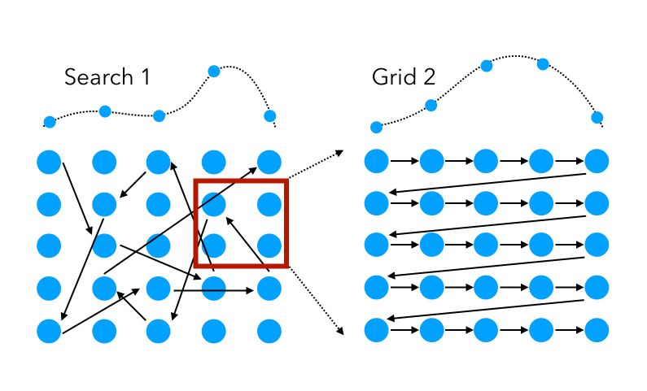
Pros
Quick Exploration: Random search identifies promising hyperparameter regions rapidly.
Targeted Refinement: Grid search then efficiently fine-tunes within these regions.
Computational Savings: Less resource-intensive than a full grid search.
Strategic Balance: Combines broad exploration with detailed exploitation.
Cons
Complex Setup: More steps involved than using a single search method.
Potentially Time-Consuming: Can be slower than random search alone.
Missed Global Optima: Initial random search may overlook the best hyperparameter areas.
Resource Management: Needs careful distribution of computational effort.
Model tuning: Basis function regression
Code
# First search: random Search to narrow down the range for hyperparameters
random_param_grid = {
'rbfsampler__gamma': np.logspace(-3, 0, 4), # Wider range for gamma
'rbfsampler__n_components': np.linspace(50, 500, 10).astype(int) # Wider range for n_components
}
# Create a custom scorer for cross-validation
mse_scorer = make_scorer(mean_squared_error, greater_is_better = False)
# Initialize RandomizedSearchCV
random_search = RandomizedSearchCV(
model,
param_distributions = random_param_grid,
n_iter = 10, # Number of parameter settings that are sampled
scoring = mse_scorer,
cv = 5,
random_state = 42
)
# Fit the model
random_search.fit(X_train, y_train)
# Second search: grid Search to fine-tune the hyperparameters
# Use best parameters from random search as the center point for the grid search
best_gamma = random_search.best_params_['rbfsampler__gamma']
best_n_components = random_search.best_params_['rbfsampler__n_components']
refined_param_grid = {
'rbfsampler__gamma': np.linspace(best_gamma / 2, best_gamma * 2, 5),
'rbfsampler__n_components': [best_n_components - 50, best_n_components, best_n_components + 50]
}
# Initialize GridSearchCV with the refined grid
grid_search = GridSearchCV(
model,
param_grid = refined_param_grid,
scoring = mse_scorer,
cv = 5
)
# Fit the model using GridSearchCV
grid_search.fit(X_train, y_train)
# Best parameters from grid search
print(f'Best parameters after Grid Search: {grid_search.best_params_}')
# Re-initialize and fit the model with the best parameters from grid search
best_basis_model = make_pipeline(
RBFSampler(
gamma = grid_search.best_params_['rbfsampler__gamma'],
n_components = grid_search.best_params_['rbfsampler__n_components'],
random_state = 42
),
LinearRegression()
)
best_basis_model.fit(X_train, y_train)
# Make new predictions with the best model
y_pred_best = best_basis_model.predict(X_test)
# Calculate R-squared and Mean Squared Error (MSE) with the best model
r2_best = r2_score(y_test, y_pred_best)
mse_best = mean_squared_error(y_test, y_pred_best)
print(f'Mean Squared Error: {mse_best}')
print(f'R-squared: {r2_best}')Best parameters after Grid Search: {'rbfsampler__gamma': np.float64(0.0016250000000000001), 'rbfsampler__n_components': np.int64(350)}
Mean Squared Error: 20.120452568590636
R-squared: 0.9136490574109445# Calculate the original MSE and r-squared scored
mse_initial = mean_squared_error(y_test, y_pred)
r2_initial = r2_score(y_test, y_pred)
# Print comparison
print(f'Initial MSE: {mse_initial}, Best Parameters MSE: {mse_best}')
print(f'Initial R-squared: {r2_initial}, Best Parameters R-squared: {r2_best}')Initial MSE: 93.76150871863946, Best Parameters MSE: 20.120452568590636
Initial R-squared: 0.5976037502722241, Best Parameters R-squared: 0.9136490574109445Piecewise polynomials
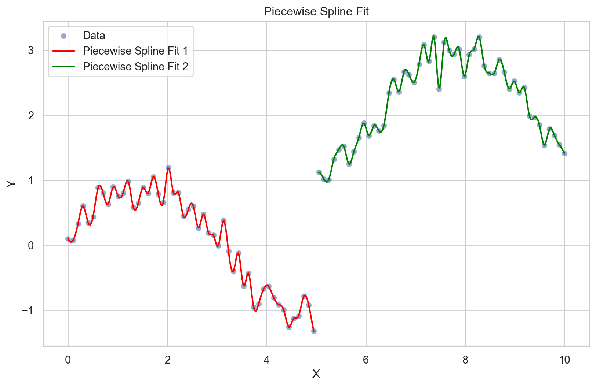
\[ y(x) = \begin{cases} a_0 + a_1 x + a_2 x^2 + \dots + a_n x^n & \text{for } x \in [x_0, x_1) \\b_0 + b_1 x + b_2 x^2 + \dots + b_m x^m & \text{for } x \in [x_1, x_2) \\\vdots \\z_0 + z_1 x + z_2 x^2 + \dots + z_p x^p & \text{for } x \in [x_{k-1}, x_k]\end{cases} \]
Where:
\(y(x)\): the output of the piecewise polynomial function at input \(x\)
\(a_0, a_1, \dots, a_n, b_0, b_1, \dots, b_n, ..., z_0, z_1, \dots, z_n\): coefficients specific to each polynomial piece within its respective interval
\([x_0, x_1), [x_1, x_2),...,[x_{k-1}, x_k]\): intervals that divide the range \(x\) into segments, each with a specific polynomial.
- Defined by knots \(x_0, x_1,...,x_k\), or points where the polynomial changes
Flexibility: Allows for modeling different behaviors of the response variable across the range of the predictor variable.
Customizable: The number and location of knots (points where the polynomial changes) can be adjusted based on the data or domain knowledge.
Continuity: While the model can change form at each knot, continuity can be enforced to ensure the function is smooth at the transitions.
Complexity Control: The degree of the polynomial for each segment can be chosen to balance the model’s flexibility with the risk of overfitting.
Interpretation: While more complex than a single polynomial model, piecewise polynomials can offer intuitive insights into changes in trends or behaviors within different regions of the data.
Piecewise polynomial regression: Applied
Code
# Assign variables
X = tucsonTemp[['date_numeric']].values
y = tucsonTemp['tavg'].values
# Splitting the dataset
X_train, X_test, y_train, y_test = train_test_split(X, y, test_size = 0.2, random_state = 42)
# Ensure X_train and y_train are sorted by X_train
sorted_indices = np.argsort(X_train.squeeze())
X_train_sorted = X_train[sorted_indices].squeeze() # Convert to 1D
y_train_sorted = y_train[sorted_indices]
# Define initial knots based on domain knowledge or quantiles
initial_knots = np.quantile(X_train_sorted, [0.25, 0.5, 0.75])
# Adjust knots to include the full range of X_train_sorted
knots = np.concatenate(([X_train_sorted.min()], initial_knots, [X_train_sorted.max()]))
# Function to handle duplicates by averaging y values for duplicate x values
def unique_with_average(X, Y):
unique_X, indices = np.unique(X, return_inverse = True)
avg_Y = np.array([Y[indices == i].mean() for i in range(len(unique_X))])
return unique_X, avg_Y
splines = []
for i in range(len(knots) - 1):
mask = (X_train_sorted >= knots[i]) & (X_train_sorted < knots[i+1])
X_segment = X_train_sorted[mask]
y_segment = y_train_sorted[mask]
# Ensure X_segment is strictly increasing by handling duplicates
X_segment_unique, y_segment_avg = unique_with_average(X_segment, y_segment)
if len(X_segment_unique) >= 4: # Ensuring there are enough points
spline = CubicSpline(X_segment_unique, y_segment_avg, bc_type='natural')
splines.append((knots[i], knots[i+1], spline))
# Predict function needs updating to loop over splines correctly
def predict_with_splines(X, splines, knots):
y_pred = np.zeros_like(X)
for i, x_val in enumerate(X):
for start, end, spline in splines:
if start <= x_val < end:
y_pred[i] = spline(x_val)
break
return y_pred
# Predictions and evaluations
y_pred = predict_with_splines(X_test.squeeze(), splines, knots) # Ensure X_test is 1D for the function
mse = mean_squared_error(y_test, y_pred)
r2 = r2_score(y_test, y_pred)
print(f'Mean Squared Error: {mse:.2f}')
print(f'R-squared: {r2:.2f}')Mean Squared Error: 16.80
R-squared: 0.93Code
# Visualization of the training and testing data
sns.scatterplot(x = X_train.squeeze(), y = y_train, color = 'gray', label = 'Training data', alpha = 0.5)
sns.scatterplot(x = X_test.squeeze(), y = y_test, color = 'blue', label = 'Testing data', alpha = 0.5)
# Assuming splines and knots are correctly calculated as per previous steps
x_range = np.linspace(X.min(), X.max(), 400).squeeze()
y_range_pred = predict_with_splines(x_range, splines, knots)
sns.lineplot(x = x_range, y = y_range_pred, color = 'red', label = 'Piecewise Polynomial Fit')
plt.xlabel('Date Numeric')
plt.ylabel('Daily Average Temperature')
plt.title('Piecewise Polynomial Fit to Temperature Data')
plt.legend()
plt.show()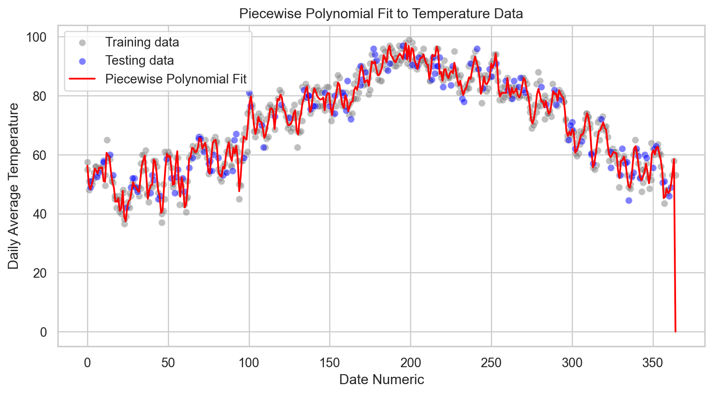
Code
# Calculating residuals
residuals = y_test - predict_with_splines(X_test.squeeze(), splines, knots)
# Plotting residuals
sns.residplot(x = y_pred, y = residuals, lowess = True, line_kws = {'color': 'red', 'lw': 1})
plt.xlabel('Predicted Values')
plt.ylabel('Residuals')
plt.title('Residual Plot for Piecewise Polynomial Regression')
plt.show()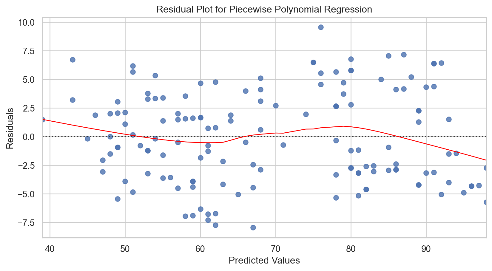
Model tuning
Pretty advanced, so we will skip this one.
Methods include:
- Understanding data + domain knowledge
- Adaptive algorithms
- Recursive Partitioning and Amalgamation (RECPAM)
- Cross-validation
- Regularization
- Ridge / Lasso regression
- Gradient descent for fine-tuning
Other regressions
Local regression (LOESS/LOWESS)
- Adaptive and Robust: Captures variable trends with minimal assumptions, adapting to data changes and resistant to outliers.
Generalized Additive Models (GAMs)
- Flexible and Interpretable: Extends GLMs to include non-linear trends through additive, interpretable components, supporting various distributions.
Tree-based regressions
See ISL Chapter 8.2
Bagging
- Robust and Reducing Overfitting: Effectively lowers variance and enhances stability in models prone to overfitting.
Random Forests
- Feature Insight and Stability: Enhances prediction stability and offers valuable insights into feature importance.
Boosting
- Precision and Performance: Amplifies the accuracy of weak learners, significantly boosting overall model performance.
Bayesian Additive Regression Trees (BART)
- Probabilistic and Nuanced: Delivers detailed probabilistic interpretations, suitable for intricate modeling challenges.
Conclusions
Table
| Model | MSE | \(R^{2}\) |
|---|---|---|
| Polynomial regression (best degree) | 26.067 | 0.8881 |
| Step functions | 53.23 | 0.77 |
| Basis functions (best \(\gamma\), # components) | 20.303 | 0.9129 |
| Piecewise polynomial (untuned) | 16.80 | 0.93 |
Occam’s Razor loses!..
In-class exercise
Go to ex-09 and perform the tasks